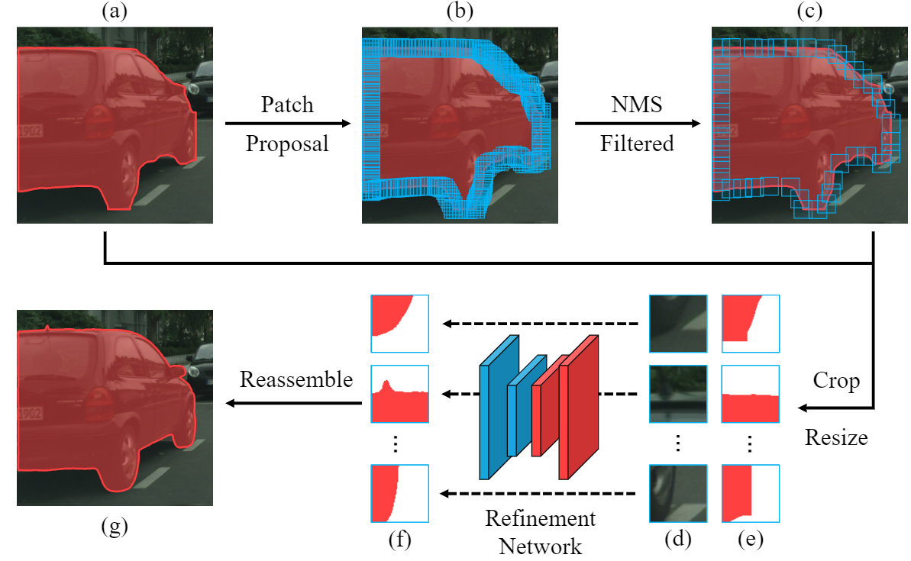

文章标题：Look Closer to Segment Better: Boundary Patch Refinement for Instance Segmentation
文章链接：https://arxiv.org/abs/2104.05239
发表时间：2021-04
在实例分割任务中，由于特征图的空间分辨率低，以及边界像素比例极低造成的不平衡问题，使得预测的实例掩码的边界通常是不精确的。

本文提出一个后处理 refinement 框架：BPR，用来改善基于任何实例分割模型结果的边界质量。BPR 在 Cityscapes 基准上比 Mask R-CNN 基线有明显的改进，特别是在边界感知指标上。此外，通过将 BPR 框架应用于 PolyTransform + SegFix 基线，在 Cityscapes 的排行榜上达到了第一名。